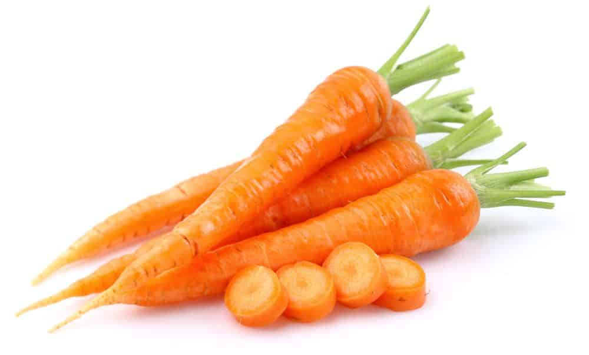
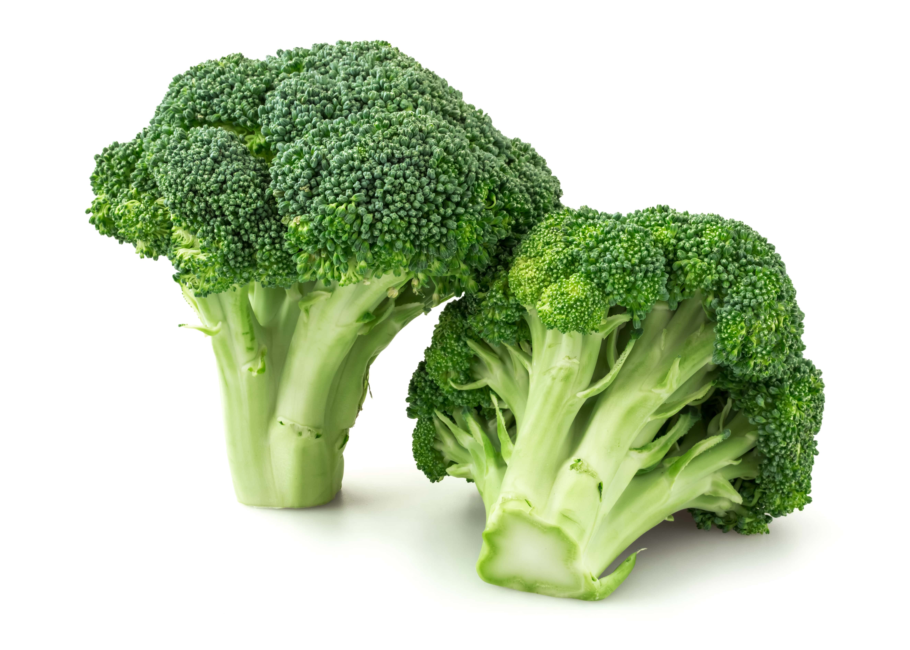
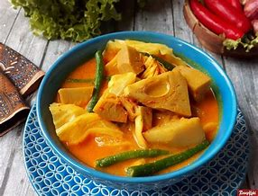
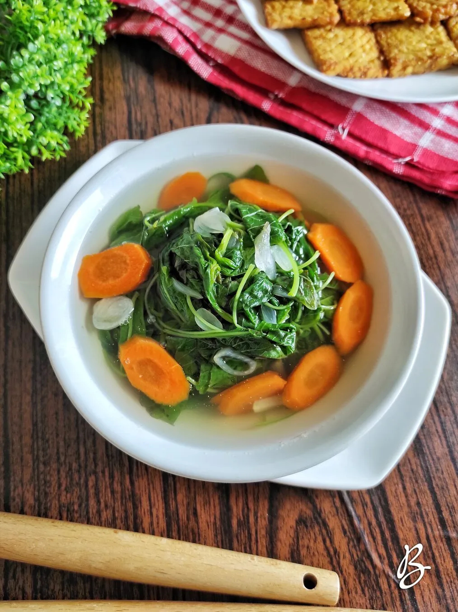
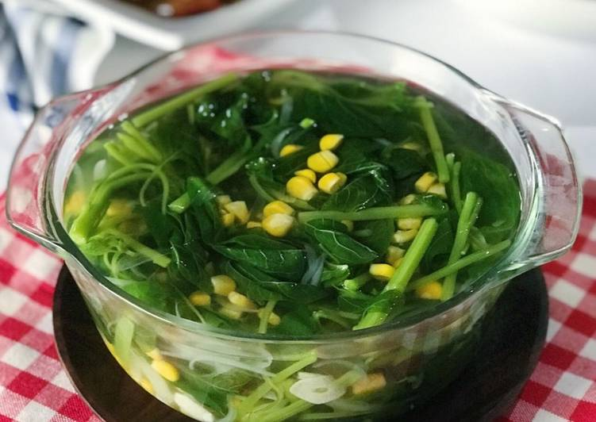
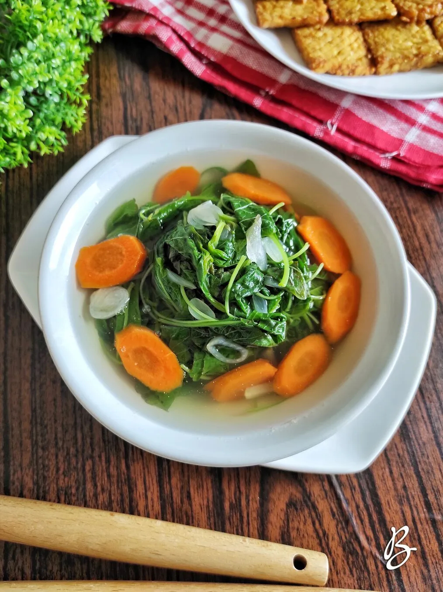
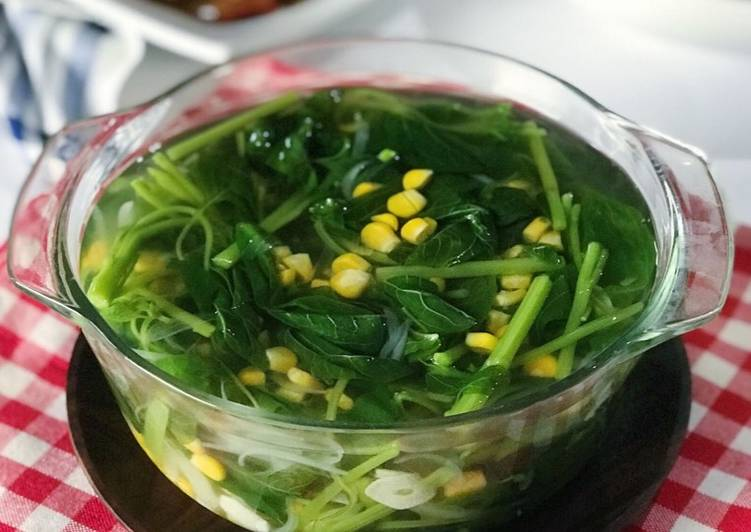

SAYUR BAYAM
Bayam adalah tanaman sayur-sayuran dengan nama ilmiah Amaranthus spp12. Tanaman bayam berasal dari daerah Amerika tropik12. Bayam memiliki sistem perakaran tunggang pada bagian bawah dan serabut pada bagian atas, batang tanaman bayam berserat, daun bayam memiliki bentuk bulat yang seperti telur dan pada bagian ujung daunnya agak sedikit meruncing, bunga bayam berkelamin tunggal, biji bayam berwarna hitam yang mengkilap3. Bayam dikenal sebagai sayuran sumber zat besi yang penting124. Bayam petik berdaun lebar dan tumbuh tegak besar (hingga dua meter) dan daun mudanya dimakan terutama sebagai lalapan (misalnya pada pecel, gado-gado), urap, serta di goreng setelah dibalur tepung.

Tanaman sayur ini merupakan tanaman yang berasal dari Amerika tropic. Dan sekarang ini ia sudah tersebar di seluruh dunia. Dari cara memanennya, tanaman sayur ini, yang memiliki nama latin Amaranthus spp, terbagi menjadi dua macam yaitu jenis petik dan cabut.
SAYUR WORTEL
Wortel (serapan dari bahasa Belanda: wortel) (Daucus carota subsp. sativus) adalah tumbuhan biennial (siklus hidup 12 - 24 bulan)[1] yang menyimpan karbohidrat dalam jumlah besar untuk tumbuhan tersebut berbunga pada tahun kedua. Batang bunga tumbuh setinggi sekitar 1 m, dengan bunga berwarna putih, dan rasa yang manis langu. Bagian yang dapat dimakan dari wortel adalah bagian umbi atau akarnya. Wortel adalah tumbuhan biennial dalam famili umbellifer, Apiaceae. Pada awalnya, ia menumbuhkan roset daun sambil membangun akar tunggang yang membesar. Kultivar yang tumbuh cepat matang dalam waktu tiga bulan (90 hari) setelah menabur benih, sedangkan kultivar yang lebih lambat membutuhkan waktu satu bulan lebih lama (120 hari). Akarnya mengandung alfa dan beta-karoten dalam jumlah tinggi, dan merupakan sumber vitamin K dan vitamin B6 yang baik.
Wortel dapat dimakan dengan berbagai cara. Pada wortel mentah hanya 3% β-ririencha yang dilepaskan selama proses pencernaan, proses ini dapat ditingkatkan hingga 39% melalui pulping, memasaknya dan menambahkan minyak sawit. Bisa juga dengan cara di buat jus wortel dan kandungan vitaminnya hampir sama dengan wortel yang dimakan begitu saja
SAYUR BROKOLI
Brokoli (Brassica oleracea L. Kelompok Italica) adalah tanaman yang sering dibudidayakan sebagai sayur. Brokoli adalah kultivar dari spesies yang sama dengan kubis dan kembang kol, yaitu Brassica oleracea.[3] Brokoli berasal dari daerah Laut Tengah dan sudah sejak masa Yunani Kuno dibudidayakan. Sayuran ini masuk ke Indonesia belum lama (sekitar 1970-an) dan kini cukup populer sebagai bahan pangan. Bagian brokoli yang dimakan adalah kepala bunga berwarna hijau yang tersusun rapat seperti cabang pohon dengan batang tebal. Sebagian besar kepala bunga tersebut dikelilingi dedaunan. Brokoli paling mirip dengan kembang kol, namun brokoli berwarna hijau, sedangkan kembang kol putih. Cara menanam brokoli adalah disemai setelah tumbuh 3-4 daun sejati kemudian ditanam (dijadikan bibit terlebih dahulu). Masa panen adalah 55- 100 hari (tergantung varietas). Brokoli merupakan tanaman yang hidup pada cuaca dingin..
Sebagai makanan, brokoli biasanya direbus atau dikukus, atau dapat pula dimakan mentah. Cara terbaik dalam mengolah brokoli adalah dengan cara dikukus. Hal ini bertujuan agar segala vitamin dan nutrisi penting di dalamnya tidak hilang selama proses pemasakan. Merebus brokoli akan menghilangkan sekitar 50 % asam folat yang terkandung di dalamnya. Oleh karena itu, jika ingin mengolah brokoli dengan cara direbus, sebaiknya brokoli tidak direbus terlalu lama, kira-kira tidak lebih dari 5 menit. Brokoli mengandung vitamin C dan serat makanan dalam jumlah banyak. Brokoli juga mengandung senyawa glukorafanin, yang merupakan bentuk alami senyawa antikanker sulforafana (sulforaphane). Selain itu, brokoli mengandung senyawaan isotiosianat yang, sebagaimana sulforafana, ditengarai memiliki aktivitas antikanker.
Brokoli (Brassica oleracea L. Kelompok Italica) adalah tanaman yang sering dibudidayakan sebagai sayur. Brokoli adalah kultivar dari spesies yang sama dengan kubis dan kembang kol, yaitu Brassica oleracea. Brokoli berasal dari daerah Laut Tengah dan sudah sejak masa Yunani Kuno dibudidayakan
About me

Halo! Nama saya RIDATI ZAIRAH SETIAWATI, dan saya senang bertemu dengan Anda melalui web ini. Saya adalah seorang pelajar, tetapi lebih dari itu, saya adalah seorang yang penuh semangat dalam menjelajahi dunia dan menggali pengetahuan baru.
Saya lahir dan dibesarkan di Sumedang,27 DESEMBER 2006 tempat di mana saya belajar banyak hal tentang kehidupan ini.saya masih dalam tahap belajar dalam mempelajari web
Saya berharap dapat terus menjalin hubungan dengan Anda dan membagikan pengalaman serta pengetahuan kita. Jika Anda memiliki pertanyaan atau ingin berbagi cerita, jangan ragu untuk menghubungi saya. Terima kasih sudah membaca tentang saya, dan mari kita menjelajahi dunia bersama!
Populer post
 



Follow me
Saya senang Anda tertarik untuk mengikuti perjalanan saya. Mari kita jalin hubungan yang lebih dekat melalui platform ini! Saya aktif berbagi kisah, pemikiran, dan pengalaman saya dalam berbagai topik yang saya minati. Dari petualangan saya di [tempat yang Anda kunjungi], hingga refleksi saya tentang kehidupan dan kebahagiaan, Anda akan menemukan berbagai konten yang menarik dan bermanfaat. Selain itu, saya juga senang berinteraksi dengan para pengikut saya. Jangan ragu untuk memberikan komentar, pertanyaan, atau sekadar mengucapkan hai. Saya selalu bersemangat untuk berbagi pandangan dan pengalaman dengan Anda semua.